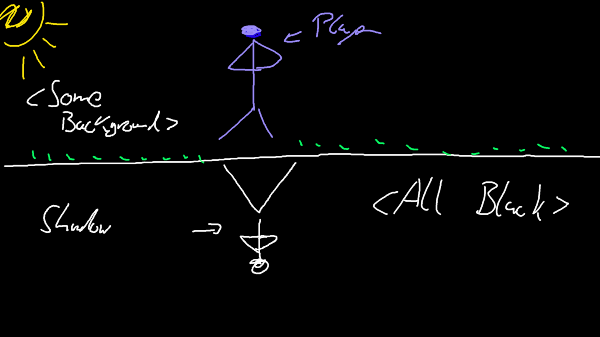

Game is split into top and bottom half. Top Half shows what is, bottom half shows sum of what happened (through the shadow).
The bottom half is background is black completely besides the shadow of player (which is initially white). Top half is "normal" background and "normal" player. I would probably not animate any scenes, just say what happens. I don't think we have enough resources/time to finish this. For example I would just say A group of people approached the player and that's it, not showing anything in the actual screen.
The shadow part is obvious. But the alchemy part isn't. Under alchemy we don't need to think only of potions and crafting, but instead we could also think about something like transformation. Transformation of a human through experience for example. The idea is that the shadow (representing the soul or the true human) transform and morpth with each action the player takes.
While I think the Law of equivalent exchange might fit more for alchemy, it does somewhat apply here as well, albeit only indirectly (you can always only take one branching option, though the options themselves aren't exactly balanced so dunno if that really applies that well here but oh well).
The player would be presented with choices like in VN, but his choices affect the whole game. Similar to how Slay the Princess works.
Player has choice between resolving conflict with violence (murder) or in a peaceful manner
I feel like something like the Omori Art style might work nice here. Slay the Princess art style might also be interesting. No idea how hard it is to do something like that though. I am very open for any others though, it just seems like an artstyle that isn't teribbly hard to do and that would fit nicely within this game.
While the gameplay is perhaps a bit boring (both of us have kinda worked on something like this), it also means we now the problem space fairly well. I am pretty confident we can make this in 2 weeks and actually make it good. There are some others ideas with alchemy such as crafting mechanics, but I don't see how that connects nicely with your skills (I also have a few doubts about getting that done in time). I also see the shadows category as a more narrative heavy theme, which I think would be very hard to connect with something like a crafting mechanic. Though I am open for ideas. I threw this page together in like 30min, I am not attached to any ideas in here. Feel very free to critique anything or suppose something completely different.